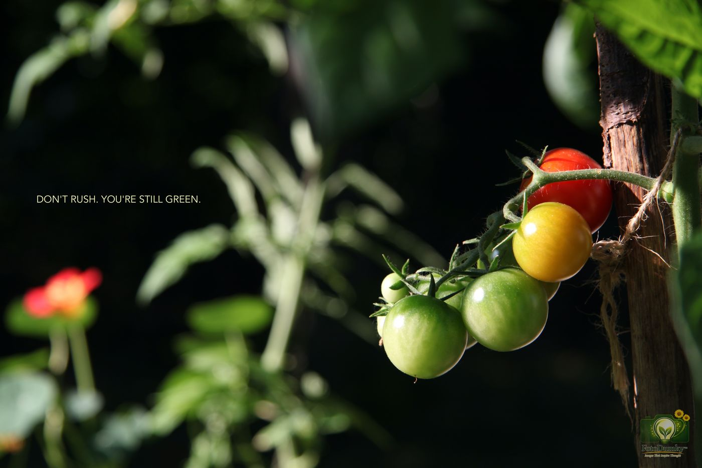

DON'T RUSH. YOU'RE STILL GREEN.
"Green" isn't a flaw - it means you are alive, unfolding and still growing.
On the surface, it sounds like a cheeky reminder. But look closer: "green" isn't a flaw - it means you are alive, unfolding and still growing. Immaturity is not a failure; it is the state of being alive. Don't demand instant maturity. Every stage has its own light, purpose and time.